新打光花粉景深融合对照
同一原始焦栈 · Helicon Focus 8.1.0 方法 B，半径 8，平滑 4 · 2026 年 11 月 27 日
仓库版保留同视野裁片、焦点曲线、测量表与运行证据。全分辨率成片和完整实验目录位于采集机的 artifacts/new-light-20261127。
实拍结果
- 40 个视野均已生成 Helicon B 和明场邻域版的全分辨率成片。共核验 1,979 张原片及 110 次全视野结果。
- 16 个留出视野中，明场邻域版的外壁带通相关有 14 个高于 Helicon B。16 个低结构背景窗口的残差都更低。Helicon 对外壁和小颗粒细节的对比度仍较强，整体质量目标尚未达到。
- 留出背景 RMS 中位数从 Helicon 的 0.655 降到 0.445，峰值 RSS 从 3116 MiB 降到 851 MiB。明场邻域版单视野中位耗时 20.64 秒，Helicon B 为 4.55 秒。
- 同批其余 18 个视野得到相同趋势。17 个外壁窗口的结构相关更高，所有 18 个外壁窗口的细节幅度仍低于 Helicon。
- 开发裁片收紧高频焦层权重后，12 个结构窗口的细节幅度均提高，低结构区域的残差也上升。短栈的右外壁仍为单一暗谷。这一变体目前只有开发裁片结果。
- 六个开发视野使用同一焦栈对照。明场邻域版在短栈上合并了旧版 Adaptive 和首轮金字塔结果的双轮廓。相同横向剖面由两个暗谷变为一个，位置约 x=313，Helicon B 在 x=312。
- 某小颗粒在 Z=+2 为近白亮斑，Z=+28 至 +30 为暗斑。同一窗口的平均灰度从旧 Adaptive 的 211.6 降到明场邻域版的 181.9，Helicon B 为 106.7。自研仍残留亮芯。
- 开发集外壁带通相关中位数为 0.939，Helicon B 为 0.905。Helicon 的同一结构幅度更接近原片。
- 相同视野的原片显示 00:02:46 和 00:09:07 两次采集存在重复颗粒布置及亮度差异。00:41:57 整次采集留出。目录日期相同，结果仅覆盖这批采集条件。
测量对照
各数值为对应组的视野中位数，括号是有效视野数。结构相关使用原始焦层中预选的 48 px 结构锚点， 成片锚点允许至多 8 px 的轴向平移。逐行 CSV 同时保留固定坐标相关和匹配量。相关用于核对结构的位置与极性，仍需检查光晕和实际纹理。 背景 RMS 只使用原片定义的低结构、未近白像素。近白掩膜以三个通道都至少 250 计，近白区域的原片纹理可见性有限。 Helicon 耗时包括保存无压缩 TIFF，转换对照 PNG 另计。
同批其它视野 · 18 个视野
| 方法 | 视野数 | 秒 | 峰值 RSS MiB | 外壁带通相关 | 小颗粒带通相关 | 外壁带通相对幅度 | 背景残差 RMS |
|---|---|---|---|---|---|---|---|
| Helicon-B | 18 | 4.67 | 3117 | 0.900 (18) | 0.931 (16) | 0.926 (18) | 0.641 (13) |
| PollenEDF-Brightfield-Context | 18 | 20.52 | 851 | 0.928 (18) | 0.968 (18) | 0.836 (18) | 0.448 (13) |
独立采集留出 · 16 个视野
| 方法 | 视野数 | 秒 | 峰值 RSS MiB | 外壁带通相关 | 小颗粒带通相关 | 外壁带通相对幅度 | 背景残差 RMS |
|---|---|---|---|---|---|---|---|
| Helicon-B | 16 | 4.55 | 3116 | 0.866 (16) | 0.968 (14) | 0.883 (16) | 0.655 (16) |
| PollenEDF-Brightfield-Context | 16 | 20.64 | 851 | 0.907 (16) | 0.972 (16) | 0.818 (16) | 0.444 (16) |
开发 · 6 个视野
| 方法 | 视野数 | 秒 | 峰值 RSS MiB | 外壁带通相关 | 小颗粒带通相关 | 外壁带通相对幅度 | 背景残差 RMS |
|---|---|---|---|---|---|---|---|
| Helicon-B | 6 | 4.50 | 3052 | 0.905 (6) | 0.973 (5) | 0.939 (6) | 0.621 (3) |
| FS_Default | 6 | 26.45 | 4297 | 0.765 (6) | 0.778 (5) | 0.790 (6) | 1.019 (3) |
| FS_Tuned | 6 | 15.66 | 5073 | 0.810 (6) | 0.744 (6) | 0.633 (6) | 0.451 (3) |
| PollenEDF-Adaptive | 6 | 13.20 | 573 | 0.837 (6) | 0.548 (6) | 0.873 (6) | 0.377 (3) |
| PollenEDF-Brightfield | 6 | 13.71 | 657 | 0.880 (6) | 0.923 (6) | 0.858 (6) | 0.497 (3) |
| PollenEDF-Brightfield-Pyramid | 6 | 20.38 | 845 | 0.914 (6) | 0.934 (6) | 0.846 (6) | 0.434 (3) |
| PollenEDF-Brightfield-Context | 6 | 20.64 | 851 | 0.939 (6) | 0.963 (6) | 0.834 (6) | 0.411 (3) |
原片中的离焦现象
左图是 29 层短栈中同一条右侧外缘的不同源层，右图是各方法的同一剖面。原始焦层另有一个明暗随焦点反转的小区域。

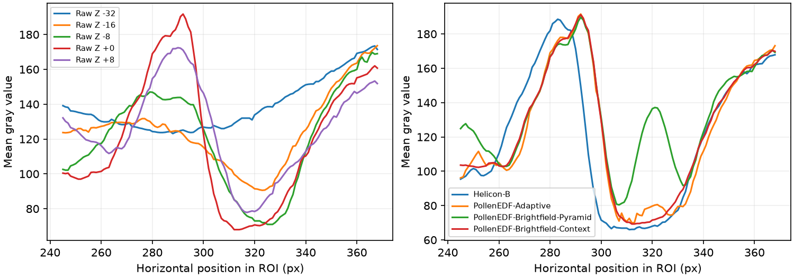
20250423_000246_v001
开发 · Images_000246 · 50 层
外壁和表面结构 · (3128, 1176) · 384 × 288
原片结构锚点 20 个 · 各层均近白 0.0%

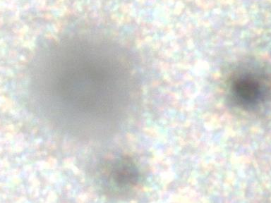

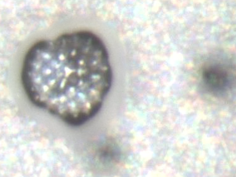

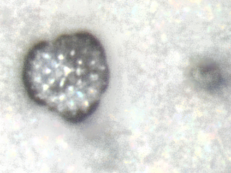

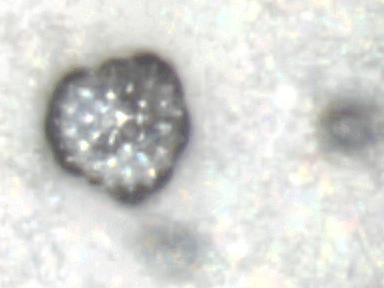

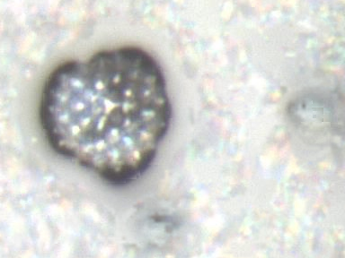

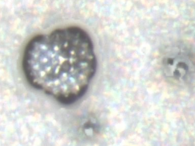


焦层图和置信度图

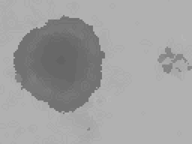

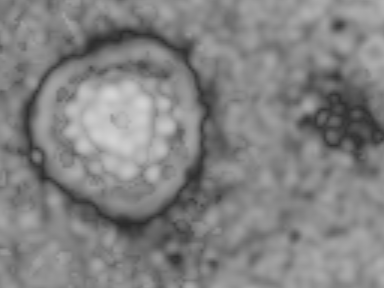
小颗粒 · (3608, 1976) · 384 × 288
原片结构锚点 19 个 · 各层均近白 0.0%


焦层图和置信度图

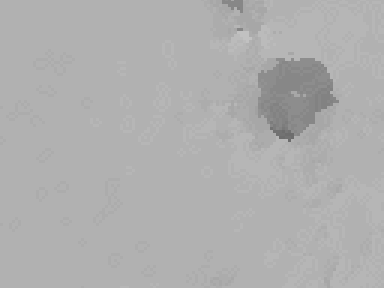

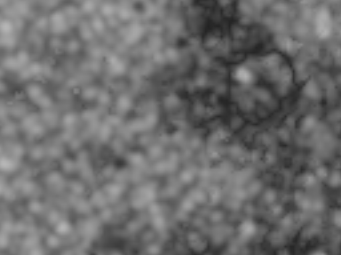
低结构背景 · (2380, 952) · 384 × 288
原片结构锚点 11 个 · 各层均近白 30.0%


焦层图和置信度图

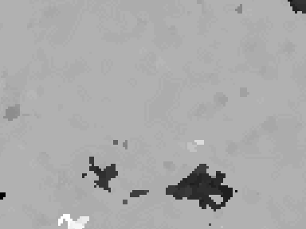

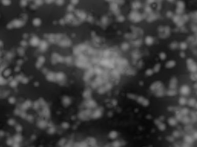
20250423_000246_v004
开发 · Images_000246 · 50 层
外壁窗口左上角测到跨 Z 的明暗反转。邻域版减弱了亮芯，仍未达到 Helicon B 的暗斑对比度。该采集的高亮背景区域有较多在所有焦层都近白的像素。
外壁和表面结构 · (1456, 1948) · 384 × 288
原片结构锚点 20 个 · 各层均近白 0.0%

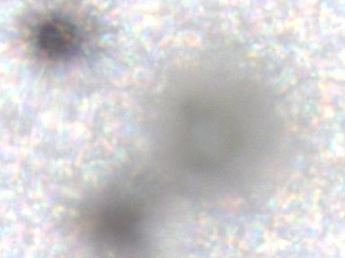

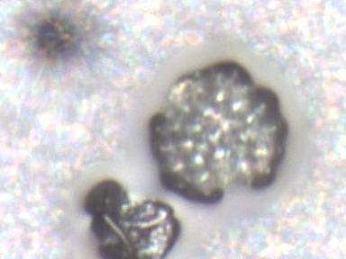

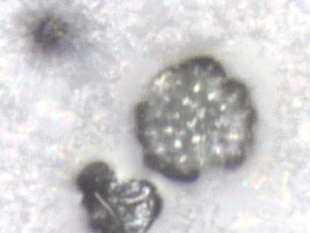

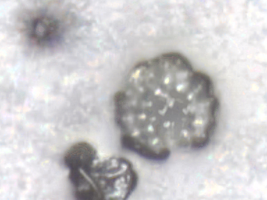

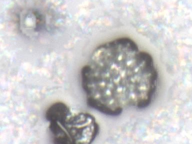

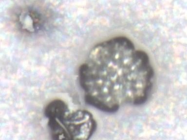

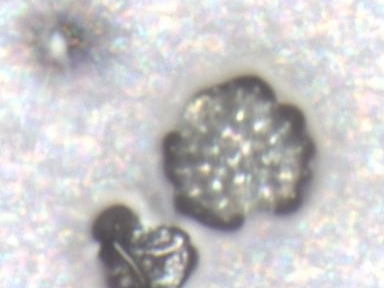

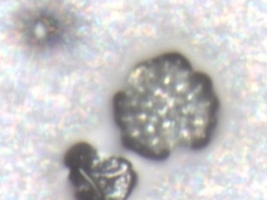


焦层图和置信度图

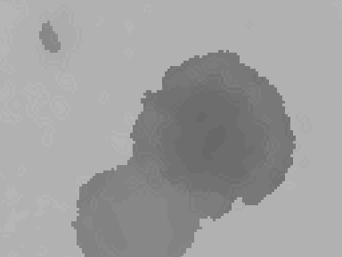

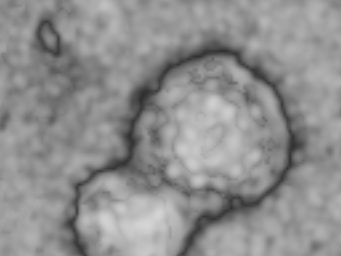
小颗粒 · (1668, 728) · 384 × 288
原片结构锚点 15 个 · 各层均近白 0.0%


焦层图和置信度图

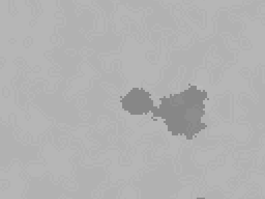

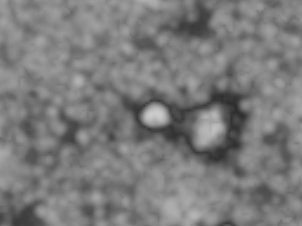
低结构背景 · (2120, 1476) · 384 × 288
原片结构锚点 12 个 · 各层均近白 16.2%


焦层图和置信度图

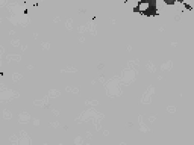

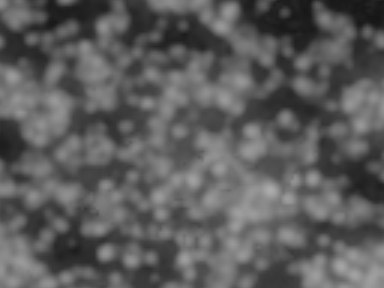
20250423_000246_v008
开发 · Images_000246 · 29 层
这是 29 层的短栈。原片右侧暗边沿 Z 迁移，旧 Adaptive 和首轮金字塔结果拼出两个暗谷。邻域版恢复单一主暗谷，最清楚的颗粒内纹理仍需和 Helicon 同窗逐块比较。
外壁和表面结构 · (64, 972) · 384 × 288
原片结构锚点 17 个 · 各层均近白 0.0%

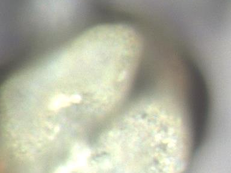

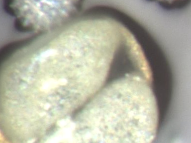

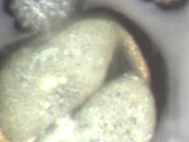

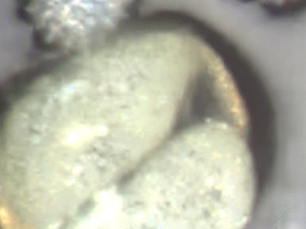


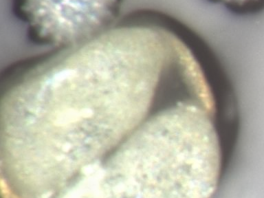


焦层图和置信度图

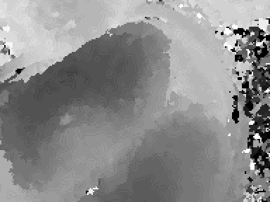

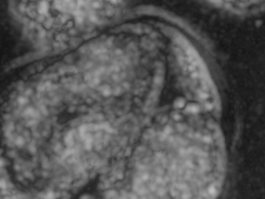
小颗粒 · (1044, 292) · 384 × 288
原片结构锚点 2 个 · 各层均近白 0.0%


焦层图和置信度图

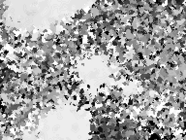


20250423_000907_v004
开发 · Images_000907龙岗变倍桂林20倍 · 50 层
外壁和表面结构 · (2844, 1044) · 384 × 288
原片结构锚点 17 个 · 各层均近白 0.0%


小颗粒 · (3456, 524) · 384 × 288
原片结构锚点 17 个 · 各层均近白 0.0%


20250423_000907_v009
开发 · Images_000907龙岗变倍桂林20倍 · 50 层
外壁和表面结构 · (2988, 1424) · 384 × 288
原片结构锚点 19 个 · 各层均近白 0.0%


小颗粒 · (784, 1900) · 384 × 288
原片结构锚点 20 个 · 各层均近白 0.0%


20250423_000907_v015
开发 · Images_000907龙岗变倍桂林20倍 · 50 层
外壁和表面结构 · (1904, 296) · 384 × 288
原片结构锚点 20 个 · 各层均近白 0.0%


小颗粒 · (2568, 1380) · 384 × 288
原片结构锚点 20 个 · 各层均近白 0.0%


20250423_004157_v001
独立采集留出 · Images_004157桂林变倍桂林20倍 · 50 层
外壁和表面结构 · (48, 2616) · 384 × 288
原片结构锚点 17 个 · 各层均近白 0.0%


小颗粒 · (1492, 380) · 384 × 288
原片结构锚点 20 个 · 各层均近白 0.0%


20250423_004157_v002
独立采集留出 · Images_004157桂林变倍桂林20倍 · 50 层
外壁和表面结构 · (1976, 2664) · 384 × 288
原片结构锚点 19 个 · 各层均近白 0.0%


小颗粒 · (48, 1776) · 384 × 288
原片结构锚点 17 个 · 各层均近白 0.0%


20250423_004157_v003
独立采集留出 · Images_004157桂林变倍桂林20倍 · 50 层
外壁和表面结构 · (804, 2016) · 384 × 288
原片结构锚点 18 个 · 各层均近白 0.0%


小颗粒 · (596, 2564) · 384 × 288
原片结构锚点 20 个 · 各层均近白 0.0%


20250423_004157_v004
独立采集留出 · Images_004157桂林变倍桂林20倍 · 50 层
外壁和表面结构 · (2220, 2324) · 384 × 288
原片结构锚点 18 个 · 各层均近白 0.0%


小颗粒 · (596, 2076) · 384 × 288
原片结构锚点 20 个 · 各层均近白 0.0%


20250423_004157_v005
独立采集留出 · Images_004157桂林变倍桂林20倍 · 50 层
邻域版在左侧浅色颗粒中保留了更多连贯的亮度纹理。左下角的小颗粒窗口两种方法都保住了亮点。
外壁和表面结构 · (2844, 88) · 384 × 288
原片结构锚点 13 个 · 各层均近白 0.0%


小颗粒 · (3216, 2080) · 384 × 288
原片结构锚点 19 个 · 各层均近白 0.0%


20250423_004157_v006
独立采集留出 · Images_004157桂林变倍桂林20倍 · 50 层
外壁和表面结构 · (1692, 2160) · 384 × 288
原片结构锚点 18 个 · 各层均近白 0.0%


小颗粒 · (1452, 760) · 384 × 288
原片结构锚点 20 个 · 各层均近白 0.0%


20250423_004157_v007
独立采集留出 · Images_004157桂林变倍桂林20倍 · 50 层
外壁和表面结构 · (820, 1256) · 384 × 288
原片结构锚点 14 个 · 各层均近白 0.0%


小颗粒 · (2152, 2532) · 384 × 288
原片结构锚点 20 个 · 各层均近白 0.0%


20250423_004157_v008
独立采集留出 · Images_004157桂林变倍桂林20倍 · 50 层
外壁和表面结构 · (360, 1340) · 384 × 288
原片结构锚点 17 个 · 各层均近白 0.0%


小颗粒 · (708, 2244) · 384 × 288
原片结构锚点 20 个 · 各层均近白 0.0%


20250423_004157_v009
独立采集留出 · Images_004157桂林变倍桂林20倍 · 50 层
外壁和表面结构 · (688, 764) · 384 × 288
原片结构锚点 18 个 · 各层均近白 0.0%


小颗粒 · (1480, 2620) · 384 × 288
原片结构锚点 20 个 · 各层均近白 0.0%


20250423_004157_v010
独立采集留出 · Images_004157桂林变倍桂林20倍 · 50 层
外壁和表面结构 · (448, 820) · 384 × 288
原片结构锚点 20 个 · 各层均近白 0.0%


小颗粒 · (1228, 1772) · 384 × 288
原片结构锚点 20 个 · 各层均近白 0.0%


20250423_004157_v011
独立采集留出 · Images_004157桂林变倍桂林20倍 · 50 层
两种方法都保住了中央小暗颗粒。邻域版背景更平稳，局部细节幅度较低。
外壁和表面结构 · (2072, 764) · 384 × 288
原片结构锚点 18 个 · 各层均近白 0.0%


小颗粒 · (868, 760) · 384 × 288
原片结构锚点 20 个 · 各层均近白 0.0%


20250423_004157_v012
独立采集留出 · Images_004157桂林变倍桂林20倍 · 50 层
外壁和表面结构 · (372, 1756) · 384 × 288
原片结构锚点 19 个 · 各层均近白 0.0%


小颗粒 · (3300, 852) · 384 × 288
原片结构锚点 20 个 · 各层均近白 0.0%


20250423_004157_v013
独立采集留出 · Images_004157桂林变倍桂林20倍 · 50 层
外壁和表面结构 · (2948, 1572) · 384 × 288
原片结构锚点 18 个 · 各层均近白 0.0%


小颗粒 · (1724, 364) · 384 × 288
原片结构锚点 20 个 · 各层均近白 0.0%


20250423_004157_v014
独立采集留出 · Images_004157桂林变倍桂林20倍 · 50 层
两枚暗色颗粒的外形均保留。Helicon 的细纹与暗壁对比更鲜明，邻域版在这里没有取得结构相关优势。
外壁和表面结构 · (2476, 2252) · 384 × 288
原片结构锚点 17 个 · 各层均近白 0.0%


小颗粒 · (2760, 224) · 384 × 288
原片结构锚点 18 个 · 各层均近白 0.0%


20250423_004157_v015
独立采集留出 · Images_004157桂林变倍桂林20倍 · 50 层
外壁和表面结构 · (1748, 920) · 384 × 288
原片结构锚点 20 个 · 各层均近白 0.0%


小颗粒 · (1184, 2056) · 384 × 288
原片结构锚点 20 个 · 各层均近白 0.0%


20250423_004157_v016
独立采集留出 · Images_004157桂林变倍桂林20倍 · 50 层
外壁和表面结构 · (1324, 2188) · 384 × 288
原片结构锚点 18 个 · 各层均近白 0.0%


小颗粒 · (1260, 1352) · 384 × 288
原片结构锚点 20 个 · 各层均近白 0.0%


20250423_000246_v002
同批其它视野 · Images_000246 · 50 层
外壁和表面结构 · (2160, 1912) · 384 × 288
原片结构锚点 17 个 · 各层均近白 0.0%


小颗粒 · (2404, 976) · 384 × 288
原片结构锚点 10 个 · 各层均近白 13.6%


20250423_000246_v003
同批其它视野 · Images_000246 · 50 层
外壁和表面结构 · (1828, 328) · 384 × 288
原片结构锚点 19 个 · 各层均近白 0.0%


小颗粒 · (164, 1972) · 384 × 288
原片结构锚点 20 个 · 各层均近白 0.0%


20250423_000246_v005
同批其它视野 · Images_000246 · 50 层
外壁和表面结构 · (1284, 932) · 384 × 288
原片结构锚点 20 个 · 各层均近白 0.0%


小颗粒 · (420, 2020) · 384 × 288
原片结构锚点 17 个 · 各层均近白 0.0%


20250423_000246_v006
同批其它视野 · Images_000246 · 50 层
外壁和表面结构 · (1604, 1532) · 384 × 288
原片结构锚点 18 个 · 各层均近白 0.0%


小颗粒 · (1252, 2076) · 384 × 288
原片结构锚点 20 个 · 各层均近白 0.0%


20250423_000246_v007
同批其它视野 · Images_000246 · 50 层
外壁和表面结构 · (2828, 360) · 384 × 288
原片结构锚点 18 个 · 各层均近白 0.0%


小颗粒 · (1328, 1824) · 384 × 288
原片结构锚点 19 个 · 各层均近白 0.0%


20250423_000907_v001
同批其它视野 · Images_000907龙岗变倍桂林20倍 · 50 层
外壁和表面结构 · (3120, 1116) · 384 × 288
原片结构锚点 19 个 · 各层均近白 0.0%


小颗粒 · (1600, 568) · 384 × 288
原片结构锚点 20 个 · 各层均近白 0.0%


20250423_000907_v002
同批其它视野 · Images_000907龙岗变倍桂林20倍 · 50 层
外壁和表面结构 · (2772, 908) · 384 × 288
原片结构锚点 19 个 · 各层均近白 0.0%


小颗粒 · (1124, 808) · 384 × 288
原片结构锚点 20 个 · 各层均近白 0.0%


20250423_000907_v003
同批其它视野 · Images_000907龙岗变倍桂林20倍 · 50 层
外壁和表面结构 · (1188, 1736) · 384 × 288
原片结构锚点 19 个 · 各层均近白 0.0%


小颗粒 · (1812, 1584) · 384 × 288
原片结构锚点 20 个 · 各层均近白 0.0%


20250423_000907_v005
同批其它视野 · Images_000907龙岗变倍桂林20倍 · 50 层
外壁和表面结构 · (680, 1936) · 384 × 288
原片结构锚点 16 个 · 各层均近白 0.0%


小颗粒 · (2096, 788) · 384 × 288
原片结构锚点 20 个 · 各层均近白 0.0%


20250423_000907_v006
同批其它视野 · Images_000907龙岗变倍桂林20倍 · 50 层
外壁和表面结构 · (1008, 864) · 384 × 288
原片结构锚点 19 个 · 各层均近白 0.0%


小颗粒 · (2124, 1160) · 384 × 288
原片结构锚点 20 个 · 各层均近白 0.0%


20250423_000907_v007
同批其它视野 · Images_000907龙岗变倍桂林20倍 · 50 层
外壁和表面结构 · (1944, 248) · 384 × 288
原片结构锚点 19 个 · 各层均近白 0.0%


小颗粒 · (1100, 1340) · 384 × 288
原片结构锚点 19 个 · 各层均近白 0.0%


20250423_000907_v008
同批其它视野 · Images_000907龙岗变倍桂林20倍 · 50 层
外壁和表面结构 · (1444, 1356) · 384 × 288
原片结构锚点 20 个 · 各层均近白 0.0%


小颗粒 · (1428, 308) · 384 × 288
原片结构锚点 19 个 · 各层均近白 0.0%


20250423_000907_v010
同批其它视野 · Images_000907龙岗变倍桂林20倍 · 50 层
外壁和表面结构 · (1028, 2404) · 384 × 288
原片结构锚点 18 个 · 各层均近白 0.0%


小颗粒 · (3400, 2560) · 384 × 288
原片结构锚点 12 个 · 各层均近白 0.0%


20250423_000907_v011
同批其它视野 · Images_000907龙岗变倍桂林20倍 · 50 层
外壁和表面结构 · (2760, 1336) · 384 × 288
原片结构锚点 19 个 · 各层均近白 0.0%


小颗粒 · (1920, 236) · 384 × 288
原片结构锚点 19 个 · 各层均近白 0.0%


20250423_000907_v012
同批其它视野 · Images_000907龙岗变倍桂林20倍 · 50 层
外壁和表面结构 · (2436, 1040) · 384 × 288
原片结构锚点 19 个 · 各层均近白 0.0%


小颗粒 · (1328, 2504) · 384 × 288
原片结构锚点 17 个 · 各层均近白 0.0%


20250423_000907_v013
同批其它视野 · Images_000907龙岗变倍桂林20倍 · 50 层
外壁和表面结构 · (372, 1284) · 384 × 288
原片结构锚点 16 个 · 各层均近白 0.0%


小颗粒 · (2476, 1168) · 384 × 288
原片结构锚点 20 个 · 各层均近白 0.0%


20250423_000907_v014
同批其它视野 · Images_000907龙岗变倍桂林20倍 · 50 层
外壁和表面结构 · (2672, 284) · 384 × 288
原片结构锚点 19 个 · 各层均近白 0.0%


小颗粒 · (44, 252) · 384 × 288
原片结构锚点 10 个 · 各层均近白 0.0%


20250423_000907_v016
同批其它视野 · Images_000907龙岗变倍桂林20倍 · 50 层
外壁和表面结构 · (1352, 1048) · 384 × 288
原片结构锚点 18 个 · 各层均近白 0.0%


小颗粒 · (1944, 2292) · 384 × 288
原片结构锚点 20 个 · 各层均近白 0.0%


原始索引、执行记录与测量
audit.json · locked.json · detail-crop-trial/measurements.json · pytest.txt · inputs/dev.json · dev-lighting-metrics.csv · dev-lighting-rois.json · dev-native-locked 运行记录 · dev-pollen-locked 运行记录 · dev-pollen-revised 运行记录 · dev-pollen-fallback 运行记录 · inputs/holdout.json · holdout-lighting-metrics.csv · holdout-lighting-rois.json · holdout-pollen-fallback 运行记录 · inputs/coverage.json · coverage-lighting-metrics.csv · coverage-lighting-rois.json · coverage-pollen-fallback 运行记录
运行摘要与日志索引
coverage-helicon · coverage-pollen-fallback · dev-helicon · dev-native-locked · dev-pollen-fallback · dev-pollen-locked · dev-pollen-revised · holdout-helicon · holdout-pollen-fallback